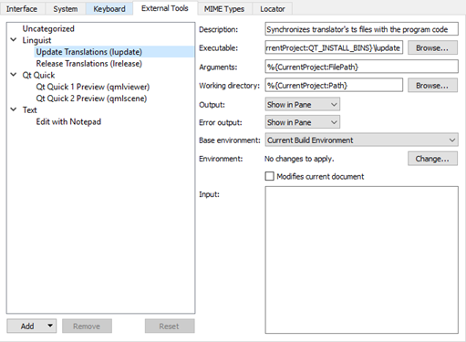

Using External Tools
You can use external tools directly from Qt Creator. Qt Linguist, QML preview tools, and the default text editor for your system are preconfigured for use. You can change their default configurations and configure new tools.
To run the tools, select Tools > External, or use the x filter in the locator.
Using Qt Linguist
You can use the Qt Linguist release manager tools, lupdate and lrelease, directly from Qt Creator. The lupdate tool is used to synchronize source code and translations. The lrelease tool is used to create run-time translation files for use by the released application.
To synchronize translation source (TS) files from a translator with the application code, select Tools > External > Linguist > Update Translations (lupdate).
To generate from the TS files Qt message (QM) files that can be used by an application, select Tools > External > Linguist > Release Translations (lrelease).
By default, the project .pro file is passed to the tools as an argument. To specify other command line arguments for the tools, select Tools > External > Configure.
To open TS files in Qt Linguist, right-click a TS file in the Projects view and select Open With > Qt Linguist in the context menu. For more information about Qt Linguist, see Qt Linguist Manual.
Previewing QML Files
You can preview the current QML document in the QML Viewer (Qt Quick 1) or QML Scene (Qt Quick 2). The preview tools enable you to load QML documents for viewing and testing while you are developing an application.
To preview the currently active QML file, select Tools > External > Qt Quick > Qt Quick 1 Preview (qmlviewer) or Qt Quick 2 Preview (qmlscene).
Using External Text Editors
You can open files for editing in the default text editor for your system: Notepad on Windows and vi on Linux and macOS. To open the file you are currently viewing in an external editor, select Tools > External > Text > Edit with Notepad or Edit with vi, depending on your system.
Qt Creator looks for the editor path in the PATH environment variable of your operating system.
Configuring External Tools
You can change the configuration of preconfigured tools and configure additional tools in Qt Creator Options.

To configure external tools:
- Select Tools > External > Configure.
- Select Add > Add Tool to add a new tool. You can also select Add Category to add a new category.
- In the Executable field, specify the executable to run. If the executable is found in your system PATH variable, do not specify the path to it.
- In the Arguments field, specify optional arguments for running the executable.
- In the Working directory field, specify the path to the working directory.
- In the Output field, select how to handle output from the tool. You can ignore the output, view it in the General Messages output pane, or replace the selected text with the output in the code editor.
- In the Error output field, select how to handle error messages from the tool.
- In the Base environment field, select whether to run the tool in the system environment or the build environment or run environment of the active project. Select the build or run environment if the system environment does not contain the necessary PATH settings to find the tool chain, for example.
- In the Environment field, select Change to modify environment variable values for build and run environments in the Edit Environment Changes dialog. For more information about how to add and remove variable values, see Batch Editing.
- Select the Modifies current document check box to make sure that if the current document is modified by the tool, it is saved before the tool is run and reloaded after the tool finishes.
- In the Input field, specify text that is passed as standard input to the tool.
The category and tool are added to the Tools > External menu.
If you change the configuration of preconfigured tools, you can later revert the changes by selecting the Reset button.
The tool configurations that you add and modify are stored in XML format in the user configuration folder. For example, ~/config/QtProject/qtcreator/externaltools on Linux and macOS and C:\Users\username\AppData\Roaming\QtProject\qtcreator\externaltools in Windows. To share a configuration with other users, copy an XML configuration file to the folder.